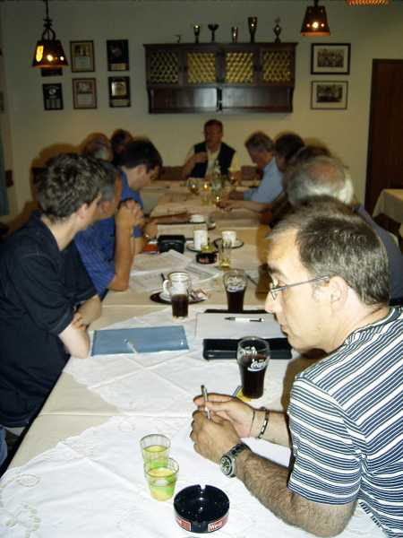

Bezirksversammlung Hochrhein
03.06.05 in Laufenburg

Der Bezirksvorstand
von links: Martin Huber, Martin Rothmund,
Hans-Peter
Rothmund und Markus Haag

Anregende Diskussionen
standen auf der Tagesordnung

Der Präsident des Badischen Schachverbands, Fritz Meyer, war ebenfalls
anwesend und freute sich, dass der Fotograf gerade ein Bier bekam...

Schulschach war das vorherrschende Thema

Fritz Meyer wird verabschiedet